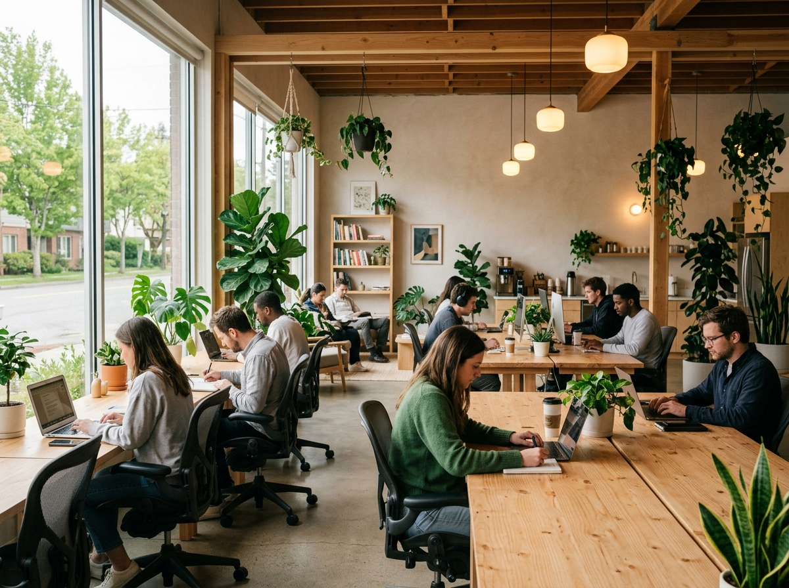

El Reto del Proyecto
El sector de cafeterías de especialidad y coworking en San Carlos no solo vende café o escritorios; vende una experiencia de vida, productividad y comunidad. El reto principal era crear una página web que presentara la esencia del espacio, mostrando qué son y qué hacen, sin dar la impresión de ser una tienda virtual o comercio transaccional en línea.
El cliente requería un sitio web que funcionara como carta de presentación para profesionales independientes, estudiantes y turistas de paso, atrayéndolos a visitar el local físico.
Nuestra Solución
Desarrollamos un sitio web con enfoque institucional y de posicionamiento de marca, en modo oscuro elegante. En lugar de un sistema de reservas de pago o un menú de compras con precios, diseñamos un catálogo visual de especialidades y un mapa interactivo de distribución física del coworking.
Los usuarios pueden explorar visualmente las características de cada área (puestos individuales, mesas de equipo o cabinas de reuniones) y conocer la filosofía del local, invitándoles a formar parte de la comunidad en Ciudad Quesada.
Explora la Experiencia de Marca
Interactúa con las pestañas de especialidades (sin enfoque de venta) y haz clic en los puestos de coworking en el mapa para conocer cómo está equipado el espacio.
Explora el Espacio de Trabajo
Haz clic en cualquier área del mapa interactivo para ver los detalles de equipamiento y atmósfera.
